新建页面
左/右：参照此页PDF页脚的左右选择；
颜色：参考章节颜色分配表（见下图），页面内其他元素的颜色参考页面颜色；
有无云图或flash：根据此页的侧边是否有云图、正文中是否需要flash来选择，
在侧边的大图片也可做在云图中显示；
页码、第几章、章节名称：根据此页PDF页脚填写。
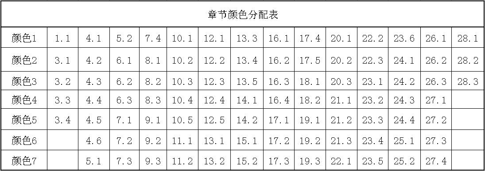
h1章节标题
章/节：只需填写阿拉伯数字。
h2章节的分节
文字：此部分填写节的下一级标题；
h3段落概括或区域概括
（此按钮可创建概括、问题、注意、思考、习题1.1等样式）
文字：点击单选按钮或在“其他”之后的文本框中输入你想输入的文字；
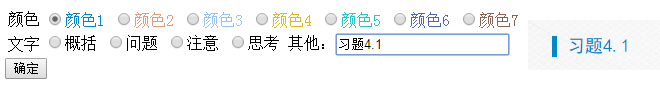
p段落
文字：在文本框中输入你需要添加的文字；
样式：选择你想为上面的文字加入的样式，包括缩进2个字符、居中、不缩进；
段落内是否有气泡：如果在你输入的这段文字中有需要添加气泡，即点击“是”,反之“无”。
例题、证明、解等
（此按钮可在一段文字前添加例、例几、分析、证明、解、注、答 图标）
文字：在文本框中输入你需要在图标后添加的文字；
图标样式：选择你需要的图标，其中选择“例几”只需在文本框中输入阿拉伯数字即可生成；
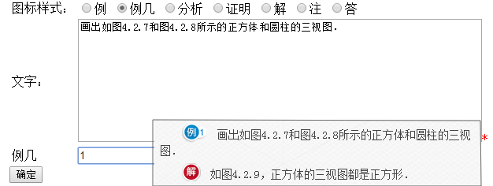
做一做
内容形式：内容若为几行几列的则选择表格形式，反之为仅内容；
小题内容：输入需要添加的文本内容；
列数/行数：内容为几行几列即选择相应的按钮；
段落格式：根据需要选择样式；
添加下一段内容：如果内容不只一段则可点击此按钮继续输入。
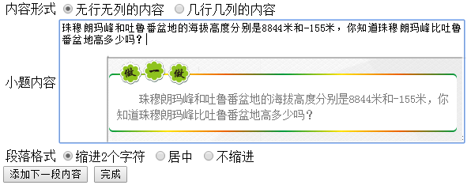
读一读
大标题：在之后的文本框中输入标题名，如果没有可不写；
段落：输入读一读的正文内容；
添加下一段内容：如果内容不只一段则可点击此按钮继续输入。
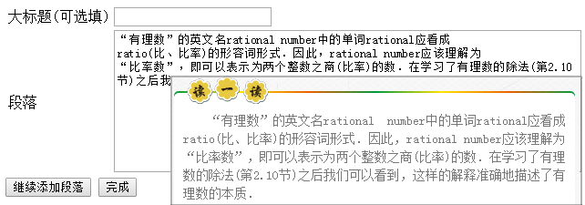
试一试
内容：在之后的文本框中输入试一试内容；
样式：选择你想为上面的文字加入的样式，包括缩进2个字符、居中、不缩进；
添加下一段内容：如果内容不只一段则可点击此按钮继续输入。
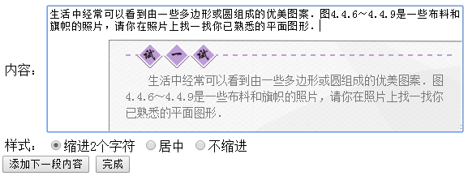
练习
显示形式：参考PDF中内容是几行几列还是仅内容形式的；
列/行：题目中有几行几列，则点击对应的按钮；
添加下一道题：如果练习中题目的数量大于1，则需在点击下一题继续添加内容，
全部添加完成后点击完成按钮。
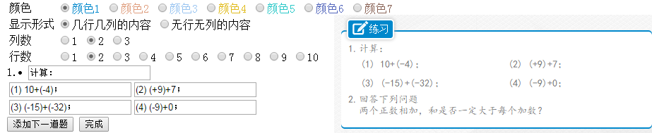
习题
高度：此为整个习题所占的高度，若过小后面的内容会挤上来且题目间切换会抖动；
小题题目：在之后的文本框中输入小题的题干；
小题形式：如果小题内容为几行几列即选择表格形式，反之选仅内容；
习题内容：在之后的文本框中输入小题的内容；
flash地址：在之后的文本框中输入答案的链接地址；
添加下一道题：如果习题中的题目数量大于1，则需在点击下一题继续添加内容，全部添加完成后点击完成按钮。
表格
表格的宽度：根据PDF决定表格所占宽度；
表格的上下边框是否加粗：如果PDF中表格有加粗，则选加粗，反之不加粗；
阅读理解
大标题：在之后的文本框中输入阅读理解的大标题内容；
小标题：在之后的文本框中输入阅读理解的小标题内容；(可不填)
段落：在之后的文本框中输入阅读理解的段落内容；
继续添加段落：如果内容不只一段则可点击此按钮继续输入。
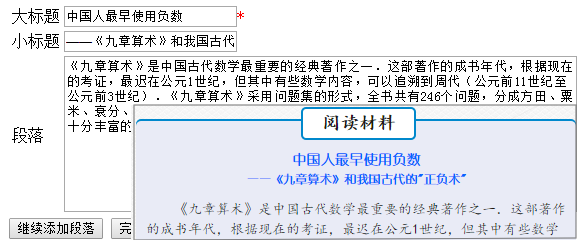
小结
小节中的段落总结：输入小结的段落标题（不需要序号）；
段落：在之后的文本框中输入小结的段落内容；
继续添加段落：如果内容不只一段则可点击此按钮继续输入。
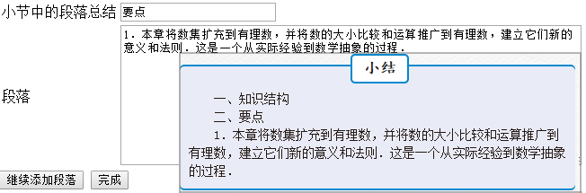
综合与实践
标题：在之后的文本框中输入标题名称；
段落：在之后的文本框中输入综合与实践的段落内容；
继续添加段落：如果内容不只一段则可点击此按钮继续输入。
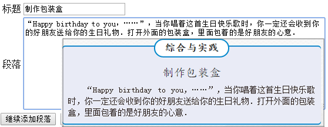
阅读理解等内的诗句或文章
样式：根据PDF样式选择是缩进4个字符还是居中；
每行内容：小诗句应逐行在其后的文本框中输入；
继续添加引用：如果内容不只一段则可点击此按钮继续输入。
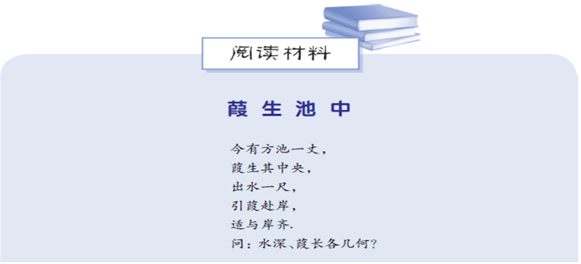
推论1、问题1等
书中如下样式用此按钮制作；
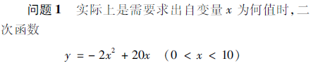
你知道吗？
标题(可选填)：如果在图标后的一行内还有文字，可在其后的文本框中输入所需文字，
如没有可直接点击确定。
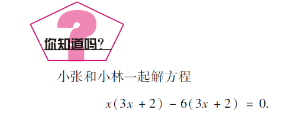
云图气泡
旋转方向：左半页旋转右，右半页旋转左；
形状：如果是PDF中有的云图，选择正方形，脚本要求的云图使用圆形，其他根据需要选择；（基本都是正方形云图）
正文内容：鼠标悬浮在云图上显示的文字；
云图内容形式：如仅云图内容，则选择按钮：无操作，如果悬浮在云图内容上还有内容，则选择按钮：悬浮显示更多内容，如需在云图后添加一个flash，则选择按钮：摄像头显示flash；
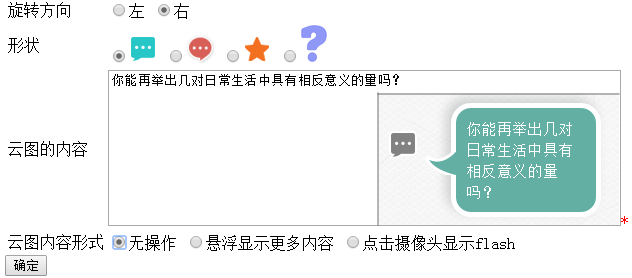
云图flash
flash地址：在其后的文本框中输入要连接的flash路径；
想一想
内容：想一想内容输入在其后的文本框内；
宽度：想一想所占的宽度；
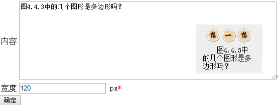
气泡
气泡里的内容：在其后文本框中输入气泡中要显示的内容；
字体对齐方式：气泡内文字的排版样式；
气泡大小：根据气泡内文字决定；
气泡形状：如果文字不多选择圆形（默认），如果文字很多选择正方形；
气泡方向：如果文字超出书本上边界，可选择向下，默认是向上的。

添加图片
图片旁边是否有内容：如果是文字和图片混排的，即选是，反之选否；
图片的位置：根据图片在页面中的位置选择；
图片是否有注释：如果图片下有注释则选择是，反之选否；
图片注释：在之后的文本框中输入注释的内容；
文字颜色：根据PDF选择所需的颜色；
文字样式：如果需要对注释文字加粗则点击加粗按钮，反之为不加粗；
选择图片：点击 选择文件 按钮，选择需要添加的图片。
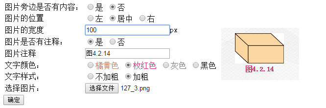
添加资源
选择资源：点击选择本地文件
资源地址：点击下方“上传”按钮，本地资源即可传到服务器，并在输入框中显示资源在服务器中的路径；
点击“确认”按钮可将路径输入到代码编辑区。
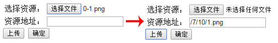
可点击说明图标
如果文章中有部分内容可点击，而又很难看出可点击，可用此按钮在标明，
并把图标拖到可点击的那一行；
输入用的下划线
宽度(可选填)：如果默认的宽度不够，可手动输入宽度。
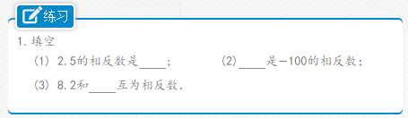
字体加粗
如果文章中有一部分文字需要加粗，可选择要加粗的文字再点击此按钮，为文字加粗。
字体加边框
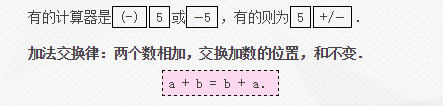
弧形BC
如果文章中有字母需要弧线，可点击此按钮，生成源码，并在其中输入字母即可。
图片的说明文字样式：（此为图片下说明文字的样式） 选择需要加样式的文字后点击此按钮； |
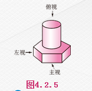 |
平行四边形
如果文章中有需要符号“□”，可点击此按钮生成，如：□ABCD。